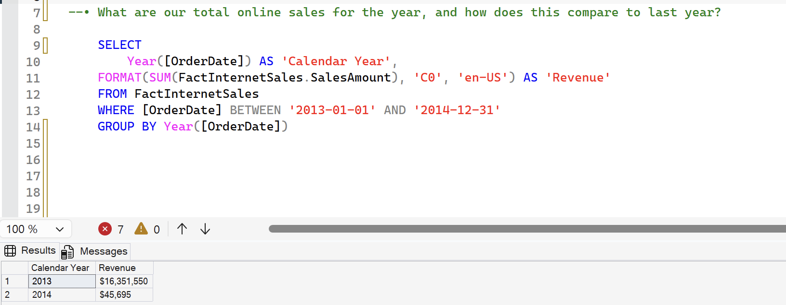
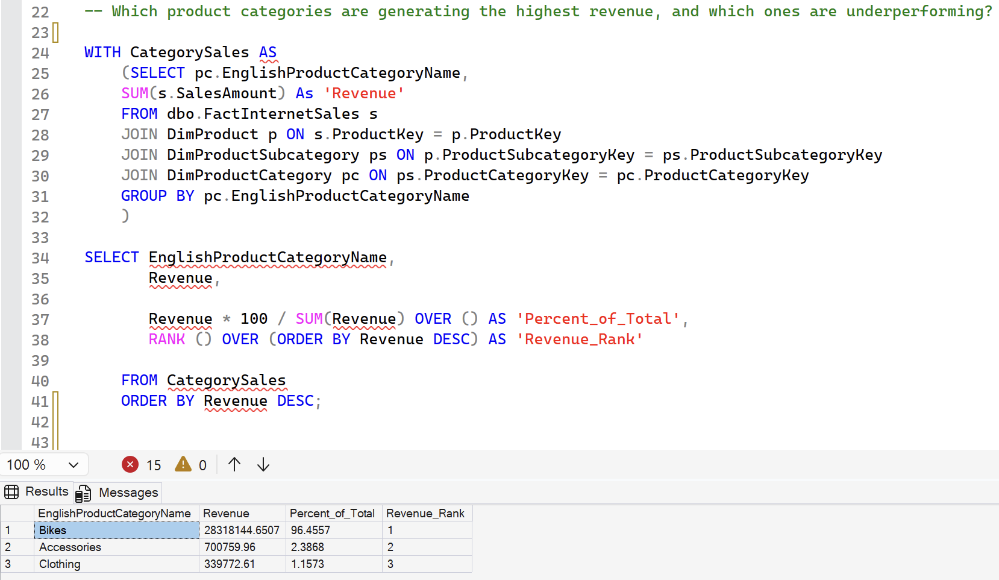
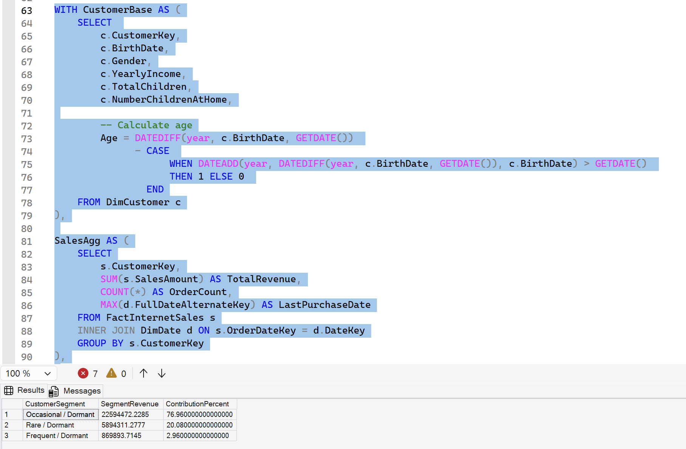
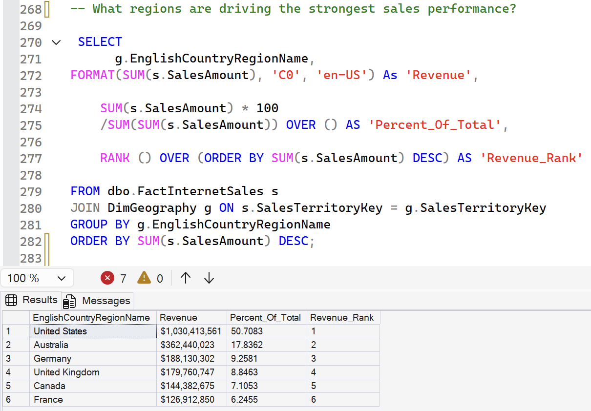
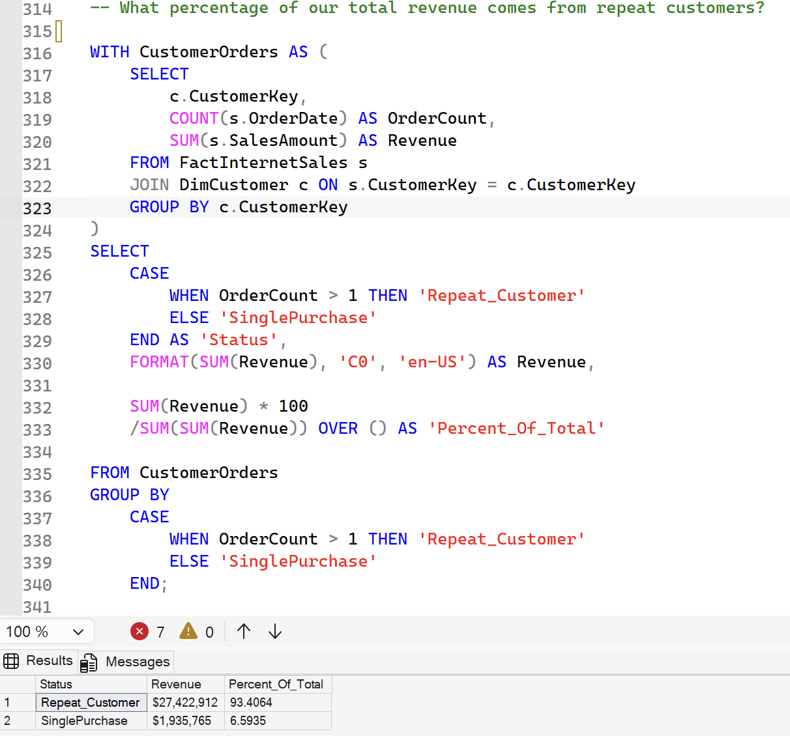

01 Project Objective
The objective of this project was to use SQL to answer key business questions relating to revenue performance, customer behaviour, product performance, and regional sales trends. The analysis was performed using Microsoft's AdventureWorks Data Warehouse and demonstrates how data can be transformed into actionable business insights.
Tools & Skills Demonstrated
02 Business Questions Answered
- How have online sales changed year-over-year?
- Which product categories generate the most revenue?
- Which customer segments contribute the most revenue?
- Which regions perform best?
- How much revenue comes from repeat customers?
03 Year-over-Year Revenue Analysis
This analysis evaluates overall online sales performance and identifies whether revenue is increasing or declining over time.
-- What are our total online sales for the year, and how does this compare to last year?
SELECT
Year([OrderDate]) AS 'Calendar Year',
FORMAT(SUM(FactInternetSales.SalesAmount), 'C0', 'en-US') AS 'Revenue'
FROM FactInternetSales
WHERE [OrderDate] BETWEEN '2013-01-01' AND '2014-12-31'
GROUP BY Year([OrderDate])

- 2013 generated $16.35 million in online revenue.
- 2014 recorded significantly lower revenue at $45,695.
- The query output shows substantially higher recorded revenue in 2013 than 2014 for the selected date range.
04 Product Category Performance
Revenue was analysed by product category to identify the company's strongest revenue generators.
-- Which product categories are generating the highest revenue, and which ones are underperforming?
WITH CategorySales AS
(SELECT pc.EnglishProductCategoryName,
SUM(s.SalesAmount) As 'Revenue'
FROM dbo.FactInternetSales s
JOIN DimProduct p ON s.ProductKey = p.ProductKey
JOIN DimProductSubcategory ps ON p.ProductSubcategoryKey = ps.ProductSubcategoryKey
JOIN DimProductCategory pc ON ps.ProductCategoryKey = pc.ProductCategoryKey
GROUP BY pc.EnglishProductCategoryName
)
SELECT EnglishProductCategoryName,
Revenue,
Revenue * 100 / SUM(Revenue) OVER () AS 'Percent_of_Total',
RANK() OVER (ORDER BY Revenue DESC) AS 'Revenue_Rank'
FROM CategorySales
ORDER BY Revenue DESC;

- Bikes generated 96.46% of total revenue, making them the dominant product category.
- Accessories contributed 2.39% of revenue and ranked second.
- Clothing represented just 1.16% of revenue, indicating a relatively minor contribution to overall sales.
05 Customer Segmentation Analysis
Customers were grouped by purchasing behaviour to determine which segments deliver the greatest revenue contribution.
-- Which customer segments contribute the most revenue, based on age, purchase frequency, and recency? WITH CustomerBase AS ( SELECT c.CustomerKey, c.BirthDate, c.Gender, c.YearlyIncome, c.TotalChildren, c.NumberChildrenAtHome, -- Calculate age Age = DATEDIFF(year, c.BirthDate, GETDATE()) - CASE WHEN DATEADD(year, DATEDIFF(year, c.BirthDate, GETDATE()), c.BirthDate) > GETDATE() THEN 1 ELSE 0 END FROM DimCustomer c ), SalesAgg AS ( SELECT s.CustomerKey, SUM(s.SalesAmount) AS TotalRevenue, COUNT(*) AS OrderCount, MAX(d.FullDateAlternateKey) AS LastPurchaseDate FROM FactInternetSales s INNER JOIN DimDate d ON s.OrderDateKey = d.DateKey GROUP BY s.CustomerKey ), Combined AS ( SELECT b.CustomerKey, b.Age, s.TotalRevenue, s.OrderCount, s.LastPurchaseDate, -- Age Group CASE WHEN b.Age BETWEEN 18 AND 24 THEN '18–24' WHEN b.Age BETWEEN 25 AND 34 THEN '25–34' WHEN b.Age BETWEEN 35 AND 44 THEN '35–44' WHEN b.Age BETWEEN 45 AND 54 THEN '45–54' ELSE '55+' END AS AgeGroup, -- Behaviour (Frequency) CASE WHEN s.OrderCount >= 10 THEN 'Frequent' WHEN s.OrderCount BETWEEN 3 AND 9 THEN 'Occasional' ELSE 'Rare' END AS FrequencyGroup, -- Lifecycle (Recency) CASE WHEN s.LastPurchaseDate >= DATEADD(month, -1, GETDATE()) THEN 'Active' WHEN s.LastPurchaseDate >= DATEADD(month, -6, GETDATE()) THEN 'At Risk' ELSE 'Dormant' END AS LifecycleStage FROM CustomerBase b LEFT JOIN SalesAgg s ON b.CustomerKey = s.CustomerKey ), FinalSegments AS ( SELECT CustomerKey, TotalRevenue, CONCAT(FrequencyGroup, ' / ', LifecycleStage) AS CustomerSegment FROM Combined ) SELECT CustomerSegment, SUM(TotalRevenue) AS SegmentRevenue, ROUND(100.0 * SUM(TotalRevenue) / SUM(SUM(TotalRevenue)) OVER(), 2) AS ContributionPercent FROM FinalSegments GROUP BY CustomerSegment ORDER BY SegmentRevenue DESC;

- Occasional / Dormant customers generated 76.96% of total revenue.
- Rare / Dormant customers contributed 20.08% of revenue.
- Frequent / Dormant customers accounted for only 2.96%, suggesting the customer base is dominated by low-frequency purchasers.
06 Geographic Sales Performance
Revenue was analysed by geographic region to identify the strongest performing markets.
-- What regions are driving the strongest sales performance?
SELECT
g.EnglishCountryRegionName,
FORMAT(SUM(s.SalesAmount), 'C0', 'en-US') As 'Revenue',
SUM(s.SalesAmount) * 100
/SUM(SUM(s.SalesAmount)) OVER () AS 'Percent_Of_Total',
RANK () OVER (ORDER BY SUM(s.SalesAmount) DESC) AS 'Revenue_Rank'
FROM dbo.FactInternetSales s
JOIN DimGeography g ON s.SalesTerritoryKey = g.SalesTerritoryKey
GROUP BY g.EnglishCountryRegionName
ORDER BY SUM(s.SalesAmount) DESC;

- The United States was the largest market, generating 50.71% of total sales revenue.
- Australia ranked second with 17.84% of revenue.
- Germany and the United Kingdom each contributed approximately 9% of total sales, highlighting the concentration of revenue in a small number of key markets.
07 Repeat Customer Revenue Analysis
Customer retention was analysed by comparing repeat purchasers with one-time buyers.
-- What percentage of our total revenue comes from repeat customers?
WITH CustomerOrders AS (
SELECT
c.CustomerKey,
COUNT(s.OrderDate) AS OrderCount,
SUM(s.SalesAmount) AS Revenue
FROM FactInternetSales s
JOIN DimCustomer c ON s.CustomerKey = c.CustomerKey
GROUP BY c.CustomerKey
)
SELECT
CASE
WHEN OrderCount > 1 THEN 'Repeat_Customer'
ELSE 'SinglePurchase'
END AS 'Status',
FORMAT(SUM(Revenue), 'C0', 'en-US') AS Revenue,
SUM(Revenue) * 100
/SUM(SUM(Revenue)) OVER () AS 'Percent_Of_Total'
FROM CustomerOrders
GROUP BY
CASE
WHEN OrderCount > 1 THEN 'Repeat_Customer'
ELSE 'SinglePurchase'
END;

- Repeat customers generated 93.41% of total revenue.
- Single-purchase customers contributed only 6.59% of revenue.
- The results indicate that customer retention is a major driver of sales performance within the AdventureWorks dataset.
08 Key Recommendations
09 Project Summary
This project demonstrates the use of SQL Server, CTEs, window functions, aggregations, and business-focused analysis techniques to answer key commercial questions using the AdventureWorks Data Warehouse. The analysis identified Bikes as the dominant product category, contributing 96.46% of total revenue, while the United States generated 50.71% of overall sales. Customer analysis showed that repeat customers accounted for 93.41% of revenue, highlighting the importance of customer retention. These findings demonstrate how SQL can be used to transform raw transactional data into actionable business insights that support operational and strategic decision-making.